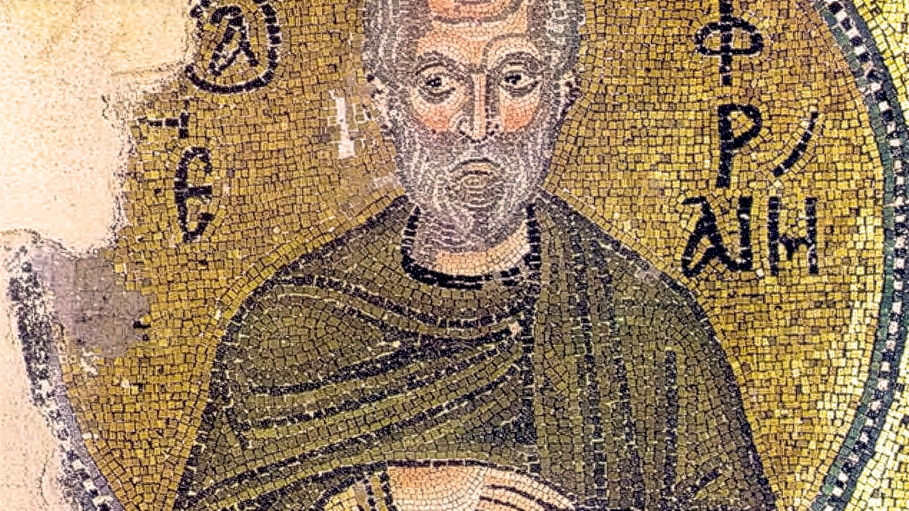

Rugăciunea Sfântului Efrem Sirul
Material bizantin într-un cadru predominant polifonic

Partituri și înregistrări
Înregistrare
Rezumat
Lucrare polifonică pentru cor bărbătesc pe textul rugăciunii Sfântului Efrem Sirul, piesa valorifică material tematic bizantin în forme muzicale occidentale precum fuga și ciaccona. Concepută pentru cor și recitator bass, ea combină sobrietatea liturgică cu sonoritatea corală de concert.
Fișă tehnică
| Orchestrație | Cor |
|---|---|
| Text | Text liturgic |
| Durată | 8′ |
| Stare | Finalizată |
| Finalizat | 2011 |
| Premieră | — |
| Interpretat de | — |
| Distincții | Achiziționat de UCMR (2016) |
| Copyright | Claudius Iacob |
Note de program
Atribuită Sfântului Efrem Sirul și utilizată cu precădere în timpul Triodului, această rugăciune este considerată a fi cea mai succintă exprimare a specificităţii Postului Mare, şi este, de aceea, rugăciunea prin excelenţă a postitorului în Creștinismul Ortodox. Este rostită la toate slujbele de zi cu zi din timpul Postului, la Liturghia darurilor mai înainte sfinţinte, şi de mult mai multe ori în particular.
Piesa, pe care am finalizat-o în 2011, este scrisă într-un stil predominant polifonic, folosind material tematic bizantin, şi armonii derivate din scările ehurilor bizantine, oarecum urmărind linia trasată de Paul Constantinescu. Este menită să fie cântată atât pe scenă cât şi la concertul din cadrul Sfintei Liturghii, când se împărtăşesc preoţii în Sfântul Altar. Formula versiunii de faţă este cor bărbătesc cu recitator bass (recitatorul poate fi un actor).
Lucrarea se structurează în trei secţiuni plus o codă, dintre care două sunt tributare, cel puţin în principiu, unor structuri formale din muzica cultă occidentală: un contrapunct liber (măs. 1-27), o fugă (măs. 28-71), o ciacconă (măs. 72-119) şi un recitativ (măs. 120-122).
În interpretarea piesei este recomandabil un timbru acoperit, cald, catifelat, capabil să dea naştere unui sunet cu relativ puţine armonice, care să favorizeze poziţiile strânse ale acordurilor de care piesa face uz.